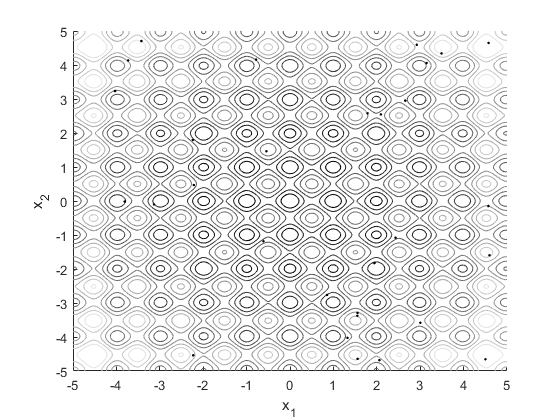
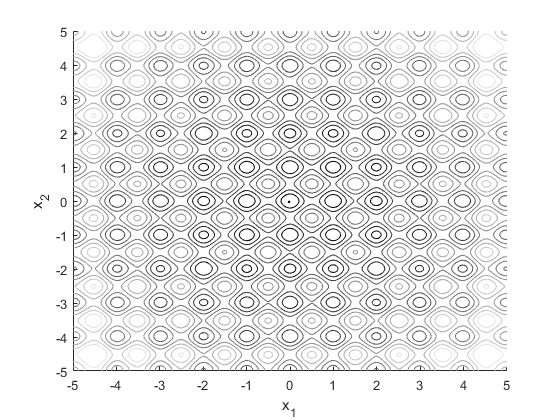
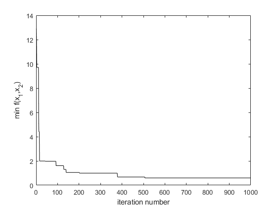

clear all
ul = -5;
uh = 5;
x = [ul:0.01:uh];
y = [ul:0.01:uh];
for i=1:length(x)
for j=1:length(y)
f(i,j) = 20+x(i)^2+y(j)^2-10*(cos(2*pi*x(i))+cos(2*pi*y(j)));
end
end
figure(1);clf;hold on
contour(x,y,f,10)
xlabel('x_1')
ylabel('x_2')
axis([ul uh ul uh])
colormap(gray)
figure(2);clf;hold on
contour(x,y,f,10)
xlabel('x_1')
ylabel('x_2')
axis([ul uh ul uh])
colormap(gray)
SN = 30;
n = 2;
a = .1;
x = ul+(uh-ul)*rand(n,SN);
figure(1)
plot(x(1,:),x(2,:),'k.')
lim = 10;
for k=1:1000
for z=1:SN
temp = ceil(SN*rand);
v(1,z) = x(1,z)+(-a+2*a*rand).*(x(1,z)-x(1,ceil(SN*rand)));
while temp==z
temp = ceil(SN*rand);
v(1,z) = x(1,z)+(-a+2*a*rand).*(x(1,z)-x(1,ceil(SN*rand)));
end
temp = ceil(SN*rand);
v(2,z) = x(2,z)+(-a+2*a*rand).*(x(2,z)-x(2,ceil(SN*rand)));
while temp==z
temp = ceil(SN*rand);
v(2,z) = x(2,z)+(-a+2*a*rand).*(x(2,z)-x(2,ceil(SN*rand)));
end
end
temp1 = 20+x(1,:).^2+x(2,:).^2-10*(cos(2*pi*x(1,:))+cos(2*pi*x(2,:)));
for z=1:length(temp1)
if temp1(z)>=0
fitness(z) = 1/(1+temp1(z));
else
fitness(z) = 1+abs(temp1(z));
end
end
pm = fitness/sum(fitness);
fbest(k) = min(20+x(1,:).^2+x(2,:).^2-10*(cos(2*pi*x(1,:))+cos(2*pi*x(2,:))));
if fbest(k)<=min(fbest)
x_best = v(:,find(fitness==max(fitness),1));
else
fbest(k) = min(fbest);
end
for z = 1:SN
s = 0;
temp = rand;
count = 0;
while s<temp
s = s+pm(count+1);
count = count+1;
end
x(:,z) = v(:,count);
end
if k>lim && all(diff(fbest(end-lim:end)))==0
x = ul+(uh-ul)*rand(n,SN);
end
end
figure(2)
plot(x_best(1),x_best(2),'k.')
figure(3)
plot(fbest,'k')
xlabel('iteration number')
ylabel('min f(x_1,x_2)')
x_best
x_best =
-0.0216
-0.0263
  